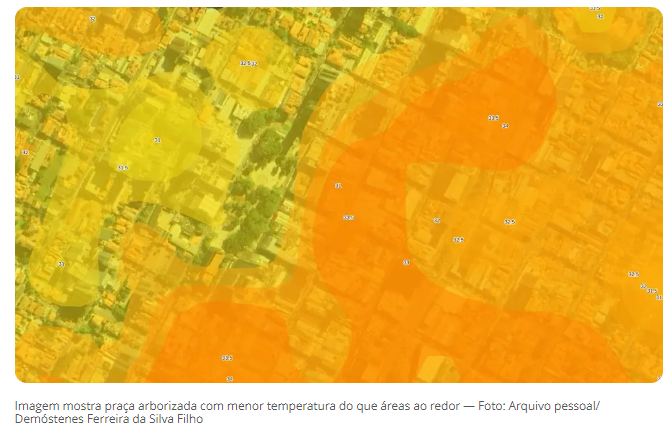

Informações pessoais
- Nome
- Profissão
- Idade
- Signo
Bolo de banana com maçã
Receita do blog Amor pela Comida
Ingredientes:
- 3/4 de xícara de banana amassada
- 2 ovos
- 1/4 de xícara de óleo
- 1/2 colher de chá de canela em pó
- 1/2 xícara de aveia em flocos finos
- 1/2 xícara de amido de milho
- 1/3 de xícara de maçã picada
- 1/2 colher de sopa de fermento em pó
Modo de fazer
- Preaqueça o forno a 180°C e unte a forma;
- Amasse a banana madura com um garfo;
- Adicione os ovos, o óleo e coco e a canela e mexa bem até formar massa uniforme com pedacinhos de banana;
- Adicione a aveia e o amido de milho e mexa até obter massa grossinha e homogênea;
- Adicione os cubinhos de maçã, mexa rapidamente e depois finalize a massa com fermento em pó;
- Coloque a massa dentro da forma;
- Leve para assar por aproximadamente 25 minutos em forno preaquecido 180º C;
- Deixe esfriar, desenforme e depois transfira para uma grade ou prato forrado com papel absorvente.
Tabela de produtos
| Produto |
Preço unitário |
Quantidade em estoque |
| HD SATA 80 GB |
R$ 85,00 |
35 |
| Pen Drive 2 GB |
R$ 15,00 |
150 |
| Impressora Laser
Colorida |
R$ 613,99 |
18 |
| Monitor LCD 17’ |
R$ 309,00 |
41 |
Áreas sem árvores em Piracicaba são até 2ºC mais quentes que locais arborizados, diz levantamento
Um dos pontos com temperatura mais alta, segundo mapa termal feito por professor da Esalq, é uma praça na Avenida Armando de Salles de Oliveira que teve 20 árvores cortadas.

Leia mais em G1 Piracicaba